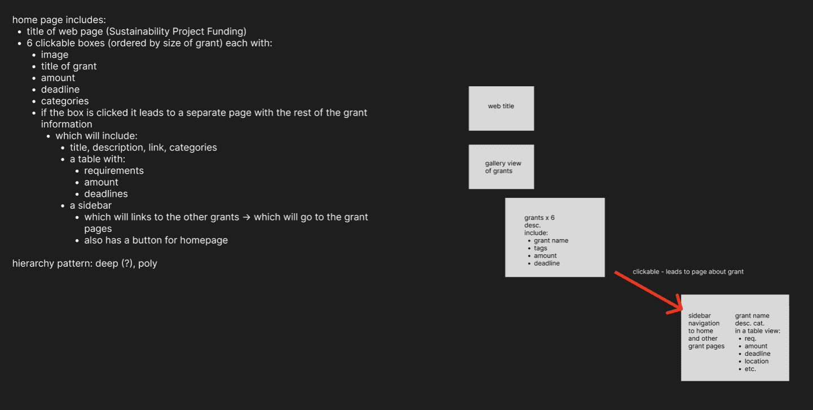

September to December 2024
Project Link
Tools Used
Figma, HTML, CSS
My Role
Website Designer and Builder
Teammate Names
Carrissa and Mary
The instructor tasked all students to give criticism and opinions regarding the current Embark Sustainability website, which has a few issues such as awkward image cropping, inconsistent elements, and so on.
Create a new website that resolves all of the criticism that I gave out about the old website, and make the new website as accessible as possible while keeping Embark Sustainability's brand identity.
Coordinated the design process from sketching and exploration to website prototyping using Figma, resulting a fully-working and accurate website prototype
Improved the user-friendliness of the websites by communicating ideas and opinions with other groupmates and TA, resulting a more user-friendly design for the website
Collaborated with a team of three to create a professional website for a business company using Visual Studio Code in less than three months
Further gained new knowledge in website making for a real company, and successfully maintained to keep their brand identity on the newly redesigned website.
Introduced and started to learn about user interface and experience, as well as how to make a website accessible.
Drew 25 sketches of design and picked three designs that looked the best. As a group, we also discussed about the Information Architecture of the website.

Using Figma, I prototyped a wireframe for my personal design idea for further discussion and feedback from the team.
Successfully designed the website's first prototype in Figma after a few team meetings and discussions. The prototype was presented to Embark Sustainability's Ambassador for feedback and critique.